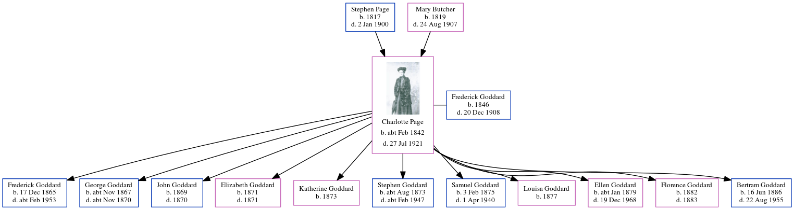

Stephen Page c1844 - 1916
[ Home ] | [ Calendar ] | [ Surnames Index ] | [ Errors ] | [ Family History ]The child of Stephen Page (an agricultural labourer) and Mary Butcher, Stephen Page, the first cousin three-times-removed on the father's side of Nigel Horne, was born in Folkestone, Kent, England c. 18441 and baptised in Hawkinge, Kent, England on 12 May 1844.
During his life, he was living on Gibraltar Lane in Folkestone on 30 Mar 18511 and at 43 Grove Road in Folkestone in 19164.
He died on 7 May 1916 in Elham, Kent, England2,3.
Parents
- Stephen was born in 1817
- Mary Julia was born in 1819
Citations
- 1851 England, Wales & Scotland Census - Findmypast (was age 6 and the son of the head of the household)
- England & Wales deaths 1837-2007 - Findmypast
- Folkestone, Hythe, Sandgate & Cheriton Herald 13 May 1916
- Folkestone, Hythe, Sandgate & Cheriton Herald 13 May 1916
Media
Folkestone, Hythe, Sandgate & Cheriton Herald - 13 May 1916

England & Wales deaths 1837-2007 - BMD/D/1916/2/AZ/000745/063
Kent Baptisms - GBPRS/CANT/B/96338736
England Births & Baptisms 1538-1975 - R_884298514
Family Tree
Map
Generated by ged2site. Last updated on Jul 3, 2024